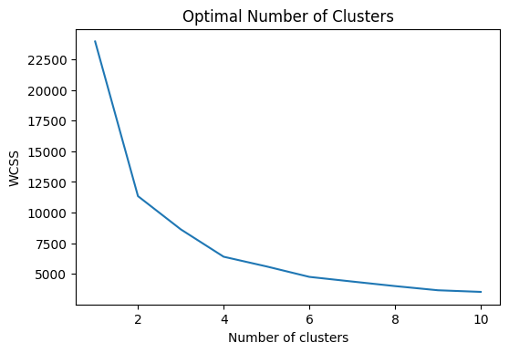

Customer segmentation and retention analysis of online retail data.
DATA
I used the online retail II dataset from ML Repository from Kaggle. The dataset contains the transactions of online retail between 2009 and 2010. The company mainly sells unique all-occasion gift-ware, and the majority of the customers consist of wholesalers.
OVERVIEW
I filtered the data with less than 1 quantity to work with only purchased products (excluding the returned products). Then I looked at the sum of frequency and the purchase price grouped by country, product and year. United Kingdom ranked the first in frequency, followed by EIRE, Germany and France. As for the amount, United Kingdom ranked the first, followed by EIRE, Netherlands and Germany; Although German customers had higher frequency of purchase, higher amount of sales were coming from the Dutch customers. The most frequently bought products were ‘white-hanging heart t-light holder’, followed by 'regency cake stand 3 tier’ and ‘strawberry ceramic trinket box.’ Products with the highest amount of sales were ‘manual’, ‘dotcom postage’ and ‘regency cake stand 3 tier.’ Most of the sales were from 2010, since the data only had one month of data in 2009.CUSTOMER RETENTION
After getting an overview of the data, I separated the UK dataset since it contained the major market. Then, I analyzed the customer retention through Repeat Purchase Rate (RPR), Purchase Frequency (PF), and Time Between Purchases(TBP) metrics.- Repeat Purchase Rate (RPR) = Number of customers that bought more than once/ Total number of customers.
- Purchase Frequency (PF) = Number of orders in the last 365 days/ Number of unique customers over the last 365 days.
- Time Between Purchases(TBP) = 365 days/ Purchase Frequency.
CUSTOMER SEGMENTATION
To segment the customers, I used the behavioral based approach of using RFM metrics: recency, frequency, and monetization.- Recency: Number of days between max date in the invoice column and the date of the last purchase for each customer.
- Frequency: Number of orders for each customer.
- Monetization: Sum of purchase price for each customer.

With this number, I employed k-means clustering to segment the customers. You can see the different segments of the customers in the 3d graph below. I named the segments as following: